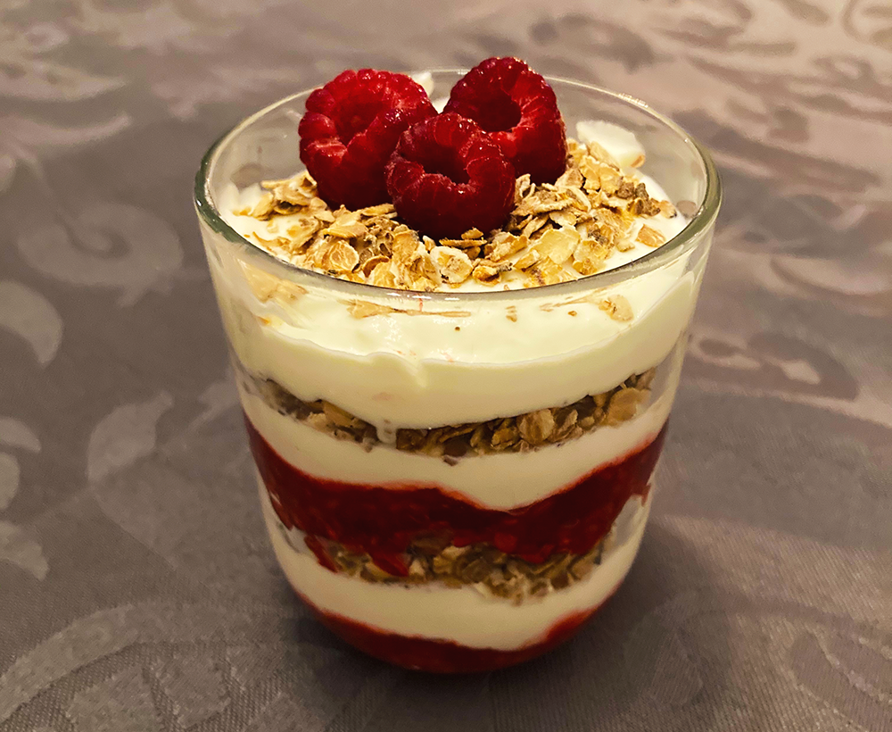

schotse cranachan

Bereidingsduur: 30 minuten
Aantal personen: 2
Ingrediënten:
125 milliliter slagroom
4 eetlepels whisky
2 eetlepels honing
125 gram frambozen
7 eetlepels havermout
2 eetlepels vanille yoghurt
125 milliliter slagroom
4 eetlepels whisky
2 eetlepels honing
125 gram frambozen
7 eetlepels havermout
2 eetlepels vanille yoghurt
Instructies:
1. Rooster de havermout een paar minuten in een pan. Neem hiervan 5 eetlepels havermout en drenk deze 3 uur (liefst nog langer) in 2,5 eetlepels whisky. Bewaar de rest van de geroosterde havermout.
2. Meng de slagroom, 1,5 eetlepel whisky, honing en yoghurt in een kom en klop deze met een mixer.
3. Leg een paar frambozen voor de garnering apart. Prak de rest van de frambozen.
4. Tijd om laagjes te maken. Neem twee glazen en doe in beide glazen eerst een laag frambozen, vervolgens een laag slagroom en vervolgens een laag van de in whisky gedrenkte havermout. Vervolgens weer een laag frambozen, slagroom en dan havermout, slagroom en voor de laatste laag de droge havermout. Garneer met enkele frambozen.
1. Rooster de havermout een paar minuten in een pan. Neem hiervan 5 eetlepels havermout en drenk deze 3 uur (liefst nog langer) in 2,5 eetlepels whisky. Bewaar de rest van de geroosterde havermout.
2. Meng de slagroom, 1,5 eetlepel whisky, honing en yoghurt in een kom en klop deze met een mixer.
3. Leg een paar frambozen voor de garnering apart. Prak de rest van de frambozen.
4. Tijd om laagjes te maken. Neem twee glazen en doe in beide glazen eerst een laag frambozen, vervolgens een laag slagroom en vervolgens een laag van de in whisky gedrenkte havermout. Vervolgens weer een laag frambozen, slagroom en dan havermout, slagroom en voor de laatste laag de droge havermout. Garneer met enkele frambozen.